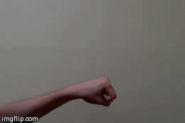

Instructions:
- Shake hand vertically to count down.
- After 1, shake one more time and indicate your choice (rock, paper or
scissors). Please orient your hand horizontally so that your palm is parallel
to the Leap Motion. (As shown in the image below.)
- To play another game, place hand close to Leap Motion (covering it) and
the counter will reset and display "Ready."

Note: